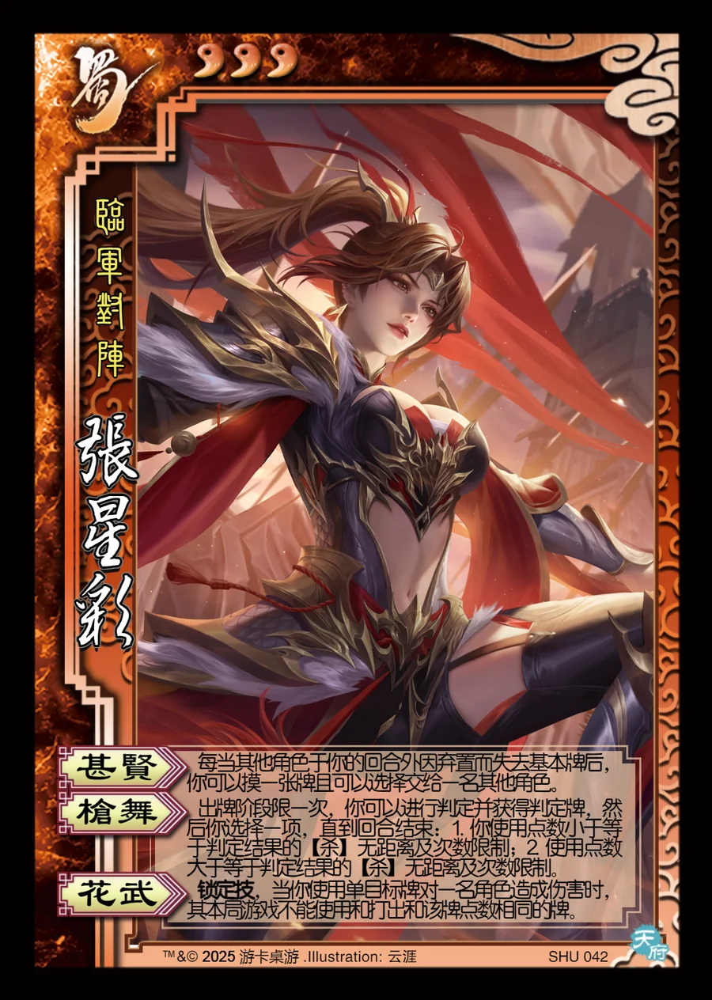

点击卡面查看大图
蜀
张星彩
♥3临军对阵
甚贤
每当其他角色于你的回合外因弃置而失去基本牌后，你可以摸一张牌且可以选择交给一名其他角色。
枪舞
出牌阶段限一次，你可以进行判定并获得判定牌，然后你选择一项，直到回合结束：1. 你使用点数小于等于判定结果的【杀】无距离及次数限制；2. 使用点数大于等于判定结果的【杀】无距离及次数限制。
花武锁定技
锁定技，当你使用单目标牌对一名角色造成伤害时，其本局游戏不能使用和打出和该牌点数相同的牌。